Home
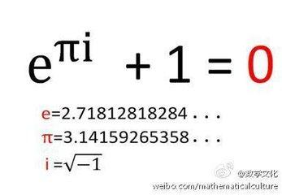
欧拉公式是数学里最令人着迷的公式之一，它将数学里最重要的几个常数联系到了一起：两个超越数：自然对数的底e，圆周率π；两个单位：虚数单位i和自然数的单位1，以及数学里常见的0。
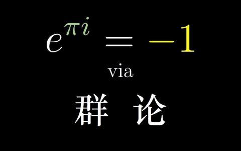
而且它对数学领域的缔造也产生了广泛影响，如三角函数、傅里叶级数、泰勒级数、概率论、群论等都有她的倩影。
因此，数学家们评价它是“上帝创造的公式，我们只能看它却不能完全理解它”。
而且，这个公式对物理学影响也非常巨大，如机械波论、电磁学、波动光学、量子力学等匍匐在她的脚下；难怪物理学家查德·费曼惊呼：欧拉恒等式不但是“数学最奇妙的公式”，也是现代物理学的定量之跟，因为她把最基本的5个数学常数简洁地连系起来，而且也将物理学中的圆周运动、简谐振动、机械波、电磁波、概率波等联系在了一起......
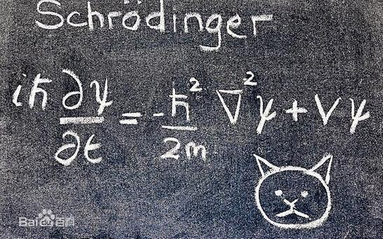
欧拉恒等式是：
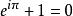
其中e是自然指数的底，i是虚数单位，π是圆周率。
这条恒等式第一次出现于1748年欧拉在洛桑出版的书Introduction，它是复分析的欧拉公式特例。
对于任意实数x，则有
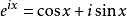
令x=π代入上式，则可得出欧拉恒等式。
在欧拉公式中，虚数i占有特殊的地位，认识这个公式就需先从i开始：
虚数i大家在高中接触过，但那时我们只知道它是-1的平方根，可是它真正的意义是什么呢?
这里有一条数轴，在数轴上有一个红色线段，它的长度是1。当它乘以3的时候，它的长度发生了变化，变成了蓝色的线段3，而当它乘以-1的时候，就变成了绿色的线段，或者说线段在数轴上围绕原点旋转了180度。
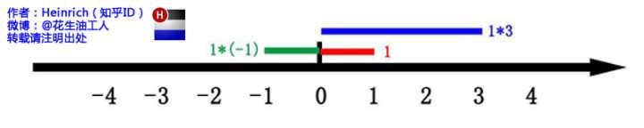
我们知道乘-1其实就等于乘了两次 i，因i×i=-1，这样就使线段旋转了180度，那么乘一次 i 呢？
答案很简单：旋转了90度呗。
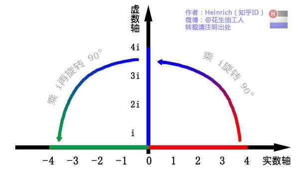
如果我们将这种运算放到坐标平面上来表示，则实轴与虚轴就构成了一组对称线段，我们再在0处安插一个垂直此线段的轴，这样就构成了一个平面，我们称之为复数平面；在这个平面上，我们可以看出，虚数i的功能就是旋转。
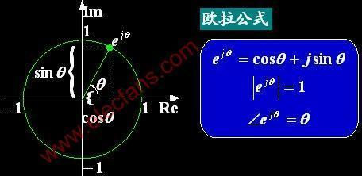
对于欧拉公式
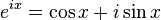
这个公式在数学领域的意义要远大于傅里叶分析，当x=π时，则有
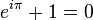
它对描述圆周运动的物理意义就是圆心位移为0，如下图：
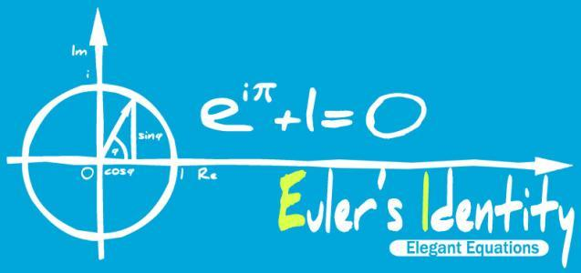
这个公式的关键作用就是将正弦波统一成了简单的指数形式，我们来看看它图像上的涵义：
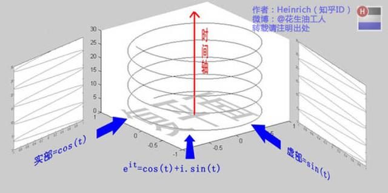
可见，欧拉公式所描绘的正是在复平面上做圆周运动的点，随着时间的改变，这个点在时间轴上就成了一条螺旋线。如果只看它的实数部分，也就是螺旋线在左侧的投影，就是一个最基础的余弦函数，而右侧投影则是一个正弦函数。
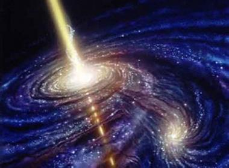
现代物理学告诉我们，宏观宇宙的构成本质是旋转的，带有圆周运动和自旋性；微观世界也是旋转的，也带有圆周运动和自旋性，而欧拉公式描述的核心正是旋转与频率，因此，在物理学定量意义上讲，称它是宇宙第一公式一点也不为过！
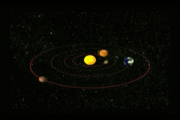